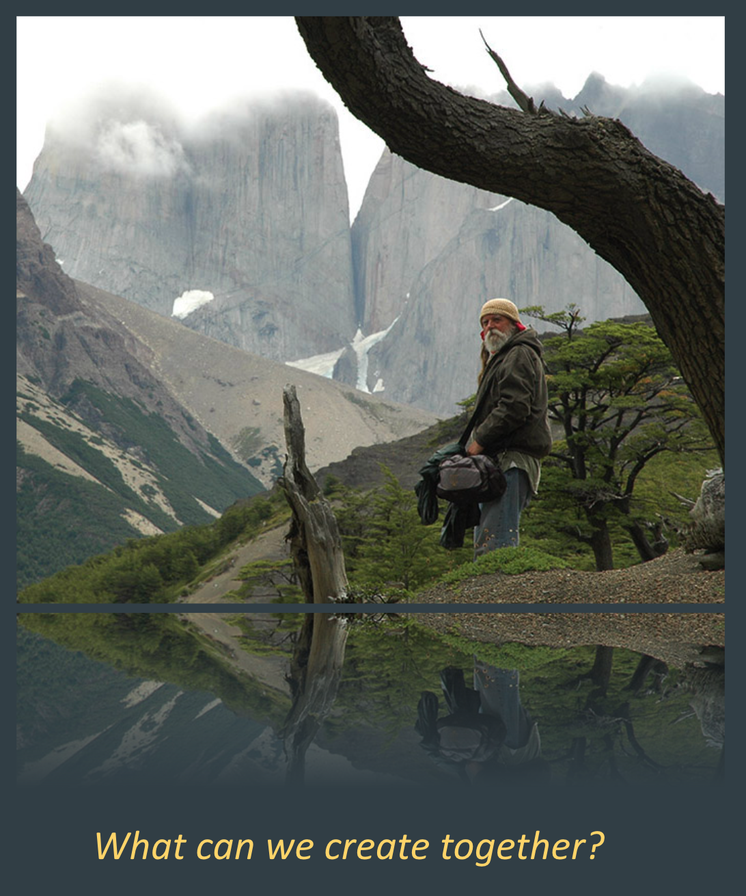

A Journey of Fifty Years
This modest work holds an especially dear place in my heart.
It was a three-page précis of the present version that I carried to the I Ching Institute and Taoist Sanctuary in 1970 and hesitantly presented to its founder, Master Khigh Alx Dhiegh. And it was that three-page précis that moved Master Khigh to take me on as his lineage student.
At that stage, it was an exercise in correlative thinking and the notion of an actual game with rules was still fairly abstract. A few years later, however, I read Hesse's Magister Ludi: Glass Bead Game and, though it provided no concrete clues as to what the game ought look like, it inspired me to work out how the marriage of Chess and the I Ching might result in an authentic and playable Game.

Having fulfilled my curiosity, the project was set aside for some twenty years, until a time in 1996 when I presented some of my thoughts on an internet discussion group dedicated to the Glass Bead Game. It was in this manner that I met Gail O'Sullivan, who was an active proponent of modern versions of the GBG. After emailing back and forth a bit, Gail moved from Oklahoma to Oregon and stayed in our home until she had organized me and the material into a website with the working game. I had named it intrachange after a suggestion by Master Khigh and so it remained on the internet in its original form due to the kindness of someone in Europe who kept it on a server all these years.
Now, fifty years later, it feels fitting to bring this, my first researches on the I Ching, to completion.